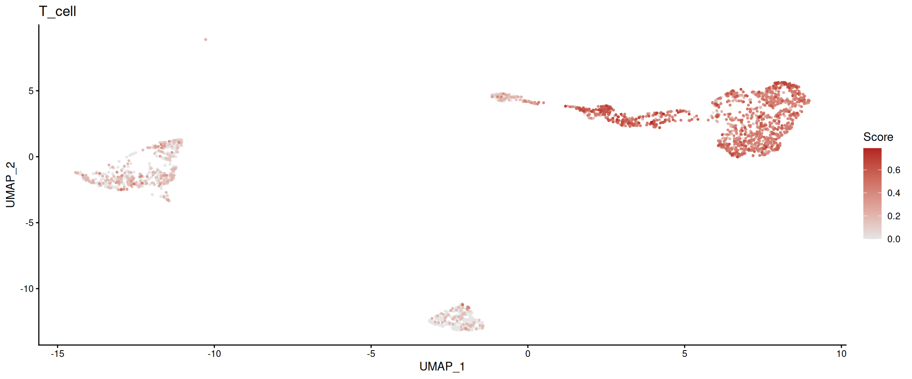
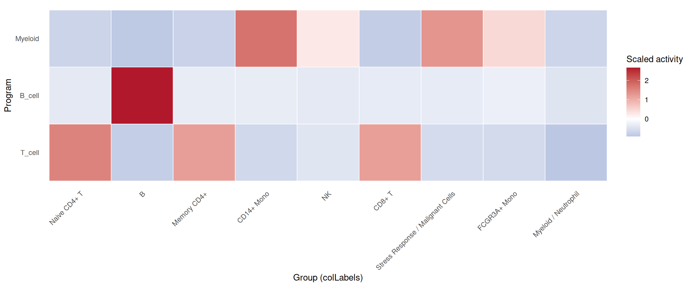

10 Program, Regulon, and Mechanistic Interpretation
Your clustering is done. Your trajectory is drawn. You have a list of marker genes. But the most important question remains unanswered: why are those states different? Which pathways drive the identity of each cluster? Which transcription factors control the developmental transitions? And can you summarize dozens of marker genes into a handful of interpretable “programs” that a biologist can reason about?
This mainline answers that downstream question. In sclet, signature scoring, pathway-level summarization, regulon inference, and program access are not scattered tools—they form one interpretation chain that moves from raw gene lists to mechanistically meaningful summaries.
The high-level direction is to let users move from quick activity scoring to richer mechanism-oriented models without changing the object contract. RunProgramWorkflow() is the intended mainline entry; the chapters below document the atomic building blocks that already make up that workflow.
10.1 Gene set scoring and pathway activity
Often, relying on the expression of a single gene (like a traditional marker) introduces too much noise and dropout artifacts. If you want to know whether a cell population is undergoing “Hypoxia” or has an active “Cell Cycle”, scoring the entire pathway or gene set is the most robust approach.
However, the algorithm landscape is fragmented: AUCell, UCell, GSVA… Each backend has a different output format. If you want to plot the results downstream, standardizing these formats can be a nightmare.
This is exactly the kind of problem sclet is designed to simplify. We provide the RunGeneSetScoring() interface, which unifies these backends and injects the scores directly into the state-aware workflow and colData, so the results remain easy to inspect and easy to reuse later.
10.2 Multi-Backend Scoring in One Click
Let’s define a few gene sets of interest and run the scoring on our PBMC dataset.
library(sclet)
# Define signatures
my_signatures <- list(
T_cell = c("CD3D", "CD3E", "CD8A", "CD4"),
B_cell = c("CD79A", "MS4A1"),
Myeloid = c("LYZ", "CD14", "FCGR3A")
)You can decisively choose the backend that best fits your needs. UCell is rank-based, extremely fast, and highly suitable for single-cell data.
# Use UCell backend
pbmc <- RunGeneSetScoring(pbmc, gene_sets = my_signatures, method = "UCell", name = "UCellScore")## Running UCell scoring...## Gene set scoring completed using UCell. Added 3 columns to colData.10.3 Program mainline workflow
If you want to organize pathway scoring and regulon activity as one coherent interpretation mainline, use RunProgramWorkflow() as the semantic entry point. It keeps the analysis story centered on “which programs are active” instead of “which backend did I call”.
pbmc_program <- pbmc
pbmc_program <- RunProgramWorkflow(
pbmc_program,
gene_sets = my_signatures,
scoring_method = "UCell",
name = "program_main"
)## Running UCell scoring...## Gene set scoring completed using UCell. Added 3 columns to colData.10.4 Reading and Visualizing Results
Where do the scores go after calculation?
1. By default, they are added as columns in the cellular metadata (colData).
2. The action is recorded in the geneset_scoring state machine.
Because the scores are now registered as a state-aware analysis result, we can inspect their provenance and directly plot a single program through a unified activity consumer:
## $id
## [1] "UCellScore"
##
## $type
## [1] "geneset_scoring"
##
## $status
## [1] "completed"
##
## $method
## [1] "UCell"
##
## $inputs
## $inputs$assay
## [1] "counts"
##
## $inputs$gene_sets
## [1] "T_cell" "B_cell" "Myeloid"
##
##
## $artifacts
## $artifacts$storage
## [1] "colData"
##
## $artifacts$score_columns
## [1] "UCellScore_T_cell" "UCellScore_B_cell"
## [3] "UCellScore_Myeloid"
##
##
## $params
## $params$ncores
## [1] 1
##
## $params$as_altExp
## [1] FALSE
##
##
## $summary
## $summary$n_programs
## [1] 3
##
## $summary$n_cells
## [1] 2638
##
##
## $created_at
## [1] "2026-07-20 04:21:27 UTC"
##
## $assay_use
## [1] "counts"
##
## $gene_sets
## [1] "T_cell" "B_cell" "Myeloid"
##
## $as_altExp
## [1] FALSE
##
## $timestamp
## [1] "2026-07-20 04:21:27 UTC"# Visualize the T_cell score distribution on the UMAP space
plot_program_activity(pbmc, program = "T_cell", source = "geneset_scoring", id = "UCellScore")## Found more than one class "package_version" in cache; using the first, from namespace 'SeuratObject'## Also defined by 'alabaster.base'## Found more than one class "package_version" in cache; using the first, from namespace 'SeuratObject'## Also defined by 'alabaster.base'
# Summarize multiple programs across groups
plot_program_heatmap(
pbmc,
programs = c("T_cell", "B_cell", "Myeloid"),
source = "geneset_scoring",
group.by = "colLabels",
id = "UCellScore"
)
plot_program_activity(
pbmc_program,
program = "T_cell",
source = "geneset_scoring",
id = "program_main_scores"
)## Found more than one class "package_version" in cache; using the first, from namespace 'SeuratObject'## Also defined by 'alabaster.base'## Found more than one class "package_version" in cache; using the first, from namespace 'SeuratObject'## Also defined by 'alabaster.base'
plot_program_heatmap(
pbmc_program,
programs = c("T_cell", "B_cell", "Myeloid"),
source = "geneset_scoring",
group.by = "colLabels",
id = "program_main_scores"
)
10.5 Advanced Pathway Discovery (altExp and RunKEGG)
When dealing with hundreds of pathways (like the entire KEGG database), dumping all scores into colData is messy. Instead, sclet allows storing these massive score matrices as an alternative experiment (altExp). This keeps your metadata clean while retaining perfect alignment with your cells.
Furthermore, sclet provides RunKEGG() as a one-stop wrapper. It automatically downloads pathways via clusterProfiler, scores the cells using UCell, stores the matrix in an altExp, and even identifies cell-type specific marker pathways using robust Wilcoxon rank-sum tests via FindMarkerPathways().
# Run the complete KEGG workflow
# Note: Requires org.Hs.eg.db for human data
res <- RunKEGG(pbmc, species = "hsa", method = "UCell", group.by = "seurat_annotations")
# The updated SCE object with the KEGG altExp
pbmc <- res$sce
# The marker pathways data.frame
kegg_markers <- res$markers
head(kegg_markers)You can also manually run differential testing on any pathway scores stored in an altExp:
# If you ran RunGeneSetScoring with as_altExp = TRUE and name = "MyScores"
markers <- FindMarkerPathways(pbmc, altExp_name = "MyScores", group.by = "seurat_annotations")Bottom Line:
Regardless of whether the underlying engine is UCell or AUCell, you can immediately plot the results with FeatureDimPlot or seamlessly run differential analysis. Life is too short to wrangle metadata formats.
10.6 SCENIC regulon inference
How do Transcription Factors (TFs) regulate target genes? Traditional differential expression analysis only tells you “which genes changed,” but SCENIC tells you “who is issuing the commands.”
If you have ever run the legacy R version of SCENIC, you undoubtedly remember its excruciatingly slow speed and the requirement to download tens of gigabytes of local databases. Today, the Python-based pySCENIC (powered by GRNBoost2) completely crushes the original R version in both speed and performance.
Rather than forcing users to leave the SingleCellExperiment workflow and manually manage a separate Python environment, sclet brings this functionality back into the same state-aware framework. Leveraging the basilisk isolated environment, it provides a native sclet entry point to pySCENIC: RunSCENIC().
The examples in this chapter are split by what the documentation cache provides. The TF list and motif annotation table are cached by the bookdown data workflow, so those setup steps can run during rendering. The actual RunSCENIC() call still requires a cisTarget ranking .feather database, which is intentionally not stored in the repository because it is large and version-specific.
10.7 Environment and Data Preparation
You no longer need to manually configure complex Python environments or wrestle with conda conflicts. sclet securely prepares the sandbox in the background. You only need to provide three things:
1. Your single-cell expression matrix (SCE object)
2. A list of transcription factors (.txt)
3. The Motif database file (in Feather format)
For most human or mouse analyses, this also means checking that your TF list, motif annotation table, and cisTarget ranking database all come from the same release family before you start the run.
library(sclet)
sce <- pbmc
# Cached small SCENIC reference files
tfs_path <- "data/allTFs_hg38.txt"
motif_annotations_path <- "data/motifs-v9-nr.hgnc.tbl"
# The large cisTarget ranking database is optional in the book build.
database_paths <- "data/hg38__refseq-r80__10kb_up_and_down_tss.mc9nr.feather"
env_database_paths <- Sys.getenv("SCLET_SCENIC_DB", unset = "")
if (nzchar(env_database_paths)) {
database_paths <- strsplit(env_database_paths, .Platform$path.sep, fixed = TRUE)[[1]]
}
scenic_db_ready <- length(database_paths) > 0 && all(file.exists(database_paths))
scenic_db_ready## [1] FALSE10.8 One-Click Inference and Scoring
Next, call RunSCENIC(). All heavy lifting—GRNBoost2 inference, Motif pruning, and AUCell scoring—will be executed blazingly fast in the Python backend.
10.9 Result Retrieval and State Awareness
After the run, where does the massive AUCell scoring matrix (tens of thousands of cells by hundreds of regulons) go?
To keep the main SCE object clean and performant, sclet mounts this large scoring matrix as an altExp (Alternative Experiment) and records it in the scenic state. This means you can retrieve either the active SCENIC run or a specific run by id, instead of manually digging through metadata().
# Check the currently active SCENIC state provenance
get_scenic(sce)
# Retrieve a specific SCENIC run by id
get_scenic(sce, id = "scenic_main")
# Extract the AUCell matrix for downstream analysis
auc_sce <- SingleCellExperiment::altExp(sce, "SCENIC_AUC")
auc_matrix <- SummarizedExperiment::assay(auc_sce, "AUC")
# Inspect available regulons
head(rownames(auc_matrix))10.10 Visualizing Regulon Activity
Once the AUC matrix is stored, the next question is not “where is the result?”, but “can I directly visualize a regulon on my embedding?” That is exactly what plot_scenic_activity() is for.
# Make sure you already have a reduction such as UMAP
DefaultReduction(sce) <- "UMAP"
# Plot a single regulon on the active embedding
plot_scenic_activity(
sce,
regulon = "STAT1(+)",
id = "scenic_main"
)Bottom Line:
You can now treat SCENIC as a proper state-aware module: run it with a named record, retrieve it via get_scenic(id = ...), and visualize a regulon directly with plot_scenic_activity(). From there, you can further perform dimensionality reduction and clustering on the auc_matrix to see whether cells group together based on “regulatory network activity” rather than only “gene expression levels”.
10.11 Unified GRN Entry: RunGRN()
If your question is simply “what gene regulatory networks are active in my cells?”, the implementation detail of which backend you used should not matter. RunGRN() wraps RunSCENIC() as the default backend while leaving room for future methods (decoupleR, FigR, SCENIC+) through the same interface.
10.12 Unified Program Access: get_program() / has_program()
Once you have signature scores and regulon activities in your object, you should not need to remember which source they came from. get_program() transparently resolves a program name from either gene set scoring or SCENIC, returning a per-cell activity vector. has_program() is the corresponding boolean guard.
10.13 Program Activity Dotplot: plot_program_dotplot()
When you want a single overview of multiple programs across cell groups, plot_program_dotplot() summarizes each program per group with dot size reflecting the fraction of expressing cells and color reflecting mean activity. This is the program-level equivalent of Seurat’s DotPlot, consuming the same typed state records as get_program().